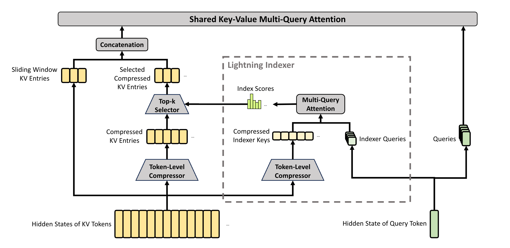

KV Compress
V32 中解决了长上下文计算量的问题，但是没有解决 kv cache 过大的问题，V4 的核心工作在于对于 kv cache 的压缩，采用了 SWA + Compressed KV Attention 的混合架构：
- SWA 用来看近处的信息
- Compressed Attention 用来关注远方的信息
两种方案的计算结果会被结合：
融合方式在数学上等价于：
\[ \text{Attn} = \text{softmax}\bigl([\underbrace{QK_{\text{swa}}^\top}_{\text{近处}}, \underbrace{QK_{\text{comp}}^\top}_{\text{远处}}, \underbrace{\text{sink}}_{\text{逃生口}}]\bigr) \cdot [V_{\text{swa}}, V_{\text{comp}}, 0] \]
- 两路 logits 拼在一起做联合 softmax（不是两次独立 attention 相加）
attn_sink是每个 head 一个可学习标量，相当于”如果近处远处都不重要就放水”的逃生出口- 这样模型自动学会”什么时候依赖近处、什么时候依赖远处摘要”
{{< svg “/images/kv_compression_routing_diagram.svg” >}}
- SWA 的 128 个原始 KV 不会被压缩
- 压缩 KV 只服务于两种远程 attention：
- CSA 中按照 c4 压缩，然后做 sparse attention, topk = 512
- HCA 中按照 c128 压缩，然后做 global attention
KV cache
bytes_per_full_token = (
# ① SWA 原始 KV（每层都有，按 swa_ratio 保留近期）
swa_ratio * kv_bytes * num_layers_total
# ② CSA 压缩 KV：每 4 token 产 1 条
+ (1/4) * kv_bytes * num_layers_ca4
# ③ HCA 压缩 KV：每 128 token 产 1 条
+ (1/128) * kv_bytes * num_layers_ca128
# ④ CSA 层的 Indexer 压缩（也是 1/4）
+ (1/4) * indexer_bytes * num_layers_ca4
# ⑤ CSA 的环形 state buffer（双流 + score）
+ swa_ratio * c4_state_ratio * c4_state_bytes * num_layers_ca4
# ⑥ HCA 的环形 state buffer
+ swa_ratio * c128_state_ratio * c128_state_bytes * num_layers_ca128
# ⑦ CSA Indexer 的 state buffer
+ swa_ratio * c4_state_ratio * c4_indexer_state_bytes * num_layers_ca4
=
0.1 * 584 * 62
+ 0.25 * 584 * 30
+ 0.0078125 * 584 * 31
+ 0.25 * 132 * 30
+ 0.1 * 0.0625 * 8192 * 30
+ 0.1 * 1.0 * 4096 * 31
+ 0.1 * 0.0625 * 2048 * 30
=
3620.8
+ 4380
+ 141.4375
+ 990
+ 1536
+ 12697.6
+ 384
= 23749.8375
)Usage
假设每个 DP 接收到的请求为
[bs, kv_len]，那么所需要的 cache 空间为：
- swa:
[swa_layers, bs, window_size, 576] - csa:
[c4_layers, bs, kv_len // 4, 576] - hca:
[c128_layers, bs, kv_len // 128, 576] - csa_indexer:
[c4_layers, bs, kv_len // 4, 128 + 4]- indexer_head_dim=128, scale_group_size=128
- csa state buffer:
[c4_layers, bs ] - csa indxer state buffer:
- hca state buffer:
State Buffer
\[ \begin{array}{c} \text{每来一个 token } x_t \\[5pt] \downarrow \\[10pt] \begin{array}{|c|} \hline w_{kv\_gate}(x_t) \\ \Rightarrow [C_t^b, C_t^a, Z_t^b, Z_t^a] \\ \hline \end{array} \\[15pt] \downarrow \quad \text{写入} \\[10pt] \begin{array}{|c|} \hline \text{【State Buffer】(ring)} \\ \text{容量：} 2m = 8 \text{ 个 token 条目} \\ \text{存的就是 per-token 的 } [C^b, C^a, Z^b, Z^a] \\ \hline \end{array} \\[15pt] \downarrow \quad \text{每凑够 } m=4 \text{ 个 token 触发一次} \\[10pt] \begin{array}{|c|} \hline \text{flash\_c4\_decode kernel} \\ \text{读 8 个 state 条目} \\ \text{做 per-channel softmax} \\ C^{\text{Comp}} = \sum S \cdot C \\ \hline \end{array} \\[15pt] \downarrow \quad \text{写入（成品）} \\[10pt] \begin{array}{|c|} \hline \text{【压缩 KV 池】c4\_kv\_pool} \\ \text{容量：} n/4 \text{ 条 } C^{\text{Comp}} \\ \text{每条 = 1 个 512 维向量} \\ \hline \end{array} \\[15pt] \downarrow \quad \text{attention 读} \\[10pt] \begin{array}{|c|} \hline \text{模块 4: flash\_mla attention} \\ Q @ K(=C^{\text{Comp}}_{\text{topk}}) \\ \text{softmax} \rightarrow \text{weighted } V \\ \hline \end{array} \end{array} \]
CSA
| 论文符号 | 代码字段 / 行号 | 配置值（compress_ratio=4） |
|---|---|---|
| \(H \in \mathbb{R}^{n \times d}\) | x（MQALayer._forward_prepare
入参） |
d = hidden_size = 7168 |
| \(m\) 每 \(m\) token 压成 \(1\) | Compressor.ratio
(deepseek_v4.py:190) |
m = 4 (overlap) 或 128 |
| \(c\) head 维度 | Compressor.head_dim
(:186) |
512（主 KV）/ 128（Indexer KV） |
| \(W^{aKV}, W^{bKV}, W^{aZ}, W^{bZ}\) 四个 \(d \times c\) 矩阵 | Compressor.wkv_gate，输出维度 \(2 \cdot \text{coff} \cdot c\)
(:199-206) |
\(\text{coff}=1+\text{overlap}=2\)，总输出 \(4c\) |
| \(C^a, C^b\) | kv_score[:, :2c]（\(C^a\) 对应 \(\text{coff}\) 块的后半 \([c:2c]\)，\(C^b\) 对应前半 \([0:c]\)，与 overlap
布局相关） |
kv_score = linear_bf16_fp32(x, wkv_gate.weight)
(:292) |
| \(Z^a, Z^b\) | kv_score[:, 2c:4c] |
同上一个 GEMM 的另一半输出 |
| \(B^a, B^b \in \mathbb{R}^{m \times c}\) | Compressor.ape (:195-197)
shape=[ratio, coff·c] |
\([4, 2 \cdot 512]\) → 拆成 \(B^a, B^b\) |
| \(C^{\text{Comp}} \in \mathbb{R}^{(n/m) \times c}\) | kv_compressed
(compressor.py:82-91) |
存入 attention_compress_states
(:230) |
| \(K^{\text{IComp}} \in \mathbb{R}^{(n/m) \times c^I}\) | C4Indexer.compressor（独立
Compressor，rotate=True，is_in_indexer=True,
head_dim=128）(:340-350) |
存入 indexer_compress_states
(:228) |
| \(c^Q_t = h_t \cdot W^{DQ}\)（eq 13） | q_lora = self.wq_a(x) → q_norm
(MQALayer._compute_q_a:621-632) |
\(W^{DQ}\) ≡
wq_a，\(d_c =
\text{q\_lora\_rank} = 1024\) |
| \(q^I_t = c^Q_t \cdot W^{IUQ}\)（eq 14） | C4Indexer.wq_b(q_lora)
(:324-331, 357) |
\(W^{IUQ}\) ≡
C4Indexer.wq_b，输出 \(n^I_h \cdot c^I = 64 \cdot
128\) |
| \(w^I_t = h_t \cdot W^w\)（eq 15） | C4Indexer.weights_proj(x)
(:332-339, 368-372) |
\(W^w \in \mathbb{R}^{d \times n^I_h}\)，\(n^I_h=64\) |
| \(I_{t,s} = \sum_h w^I_{t,h} \cdot \text{ReLU}(q^I_{t,h} \cdot K^{\text{IComp}}_s)\)（eq 16） | deep_gemm.fp8_paged_mqa_logits(q_fp8, kv_fp8, weights,…)
(nsa_indexer.py:423) |
ReLU 内嵌在 kernel |
| \(C^{\text{SprsComp}}_t = \{ C_s^{\text{Comp}} \mid I_{t,s} \in \text{Top-k} \}\)（eq 17） | metadata.topk_transform(logits, index_topk)
(nsa_indexer.py:435) |
index_topk = 512 |
| 主 attention 只在 \(C^{\text{SprsComp}}_t\) 上计算 | attn_backend.forward(..., compress_ratio=4, attn_sink, …)
+ topk_idx (MQALayer.forward:862) |
FlashMLA flash_c4_decode kernel |
Prepare Attn
生成 \(c_{Q}\)，参与后续的 Indexer 和 Attention 阶段
\[ \mathbf{c}_t^Q = \mathbf{h}_t \cdot W^{DQ} \]
Attn C4
产生压缩过的 KV
\[ \begin{aligned} &\left[ C^b_t \mid C^a_t \mid Z^b_t \mid Z^a_t \right] = W_{\text{kv\_gate}} \, x_t \\[6pt] &\left[ S^b_{m,0:4} ;\; S^a_{m,0:4} \right] = \operatorname{Softmax}\!\left( \left[ Z^b_{4m-4:4m} + B^b ;\; Z^a_{4m:4m+4} + B^a \right] \right) \\[10pt] &C^{\text{Comp}}_m = \operatorname{RoPE}\!\Big( \operatorname{Norm}\!\Big( \sum_{j=0}^{3} S^a_{m,j} \odot C^a_{4m+j} + \sum_{k=0}^{3} S^b_{m,k} \odot C^b_{4m-4+k} \Big) \Big) \end{aligned} \]
{{< svg “/images/c4_compress.drawio.svg” >}}
Compress m
如果是对于 m 的 kv 进行压缩的话，通用的公式如下：
\[ \left[S_{mi:m(i+1)-1}^a; S_{m(i-1):mi-1}^b\right] = \operatorname{Softmax}_{\text{row}}\left(\left[Z_{mi:m(i+1)-1}^a + B^a; Z_{m(i-1):mi-1}^b + B^b\right]\right), \]
\[ C_i^{\text{Comp}} = \sum_{j=mi}^{m(i+1)-1} S_j^a \odot C_j^a + \sum_{j=m(i-1)}^{mi-1} S_j^b \odot C_j^b, \]
{{< region note >}} \(\odot\) denotes the Hadamard product;
\(\text{Softmax}_{\text{row}}(\cdot)\) denotes the softmax operation along the row dimension, which performs normalization across the total of \(2m\) elements from both \(Z^a\) and \(Z^b\).
When \(i = 0\), \(Z^b_{m(i-1):mi-1}\) is padded with negative infinity and \(C^b_{m(i-1):mi-1}\) is padded with zeros. Note that each \(C_i^{\text{Comp}}\) is derived from \(2m\) KV entries, but the indexes of \(C^b\) used for \(C_i^{\text{Comp}}\) and the indexes of \(C^a\) used for \(C_{i-1}^{\text{Comp}}\) are overlapped. Therefore, CSA in fact compresses the sequence length to \(\frac{1}{m}\) times. {{< /region >}}
C4 Indexer
\[ \begin{aligned} &K^{\text{IComp}} = \text{Compressor}_{\text{indexer}}(x) \\ &q^I_t = \left[ q_{t,1}^I; q_{t,2}^I; \dots; q_{t,n_h^I}^I \right] = \text{RoPE}\big(W^{\text{IUQ}} \cdot c^Q_t\big) \odot \text{Hadamard} \\ &w_{t}^I = \left[ w_{t,1}^I; w_{t,2}^I; \dots; w_{t,n_h^I}^I \right] = \text{softmax}\left( \frac{W^w \cdot h_t}{\sqrt{n^I_h}} \right) \\ &I_{t,s} = \sum_h w^I_h \cdot \text{ReLU}\big( q^I_{t,h} \cdot K^{\text{IComp}}_{s,h} \big) \\ &\mathcal{C}_t^{\text{SprsComp}} = \left\{ \mathcal{C}_s^{\text{Comp}} \mid I_{t,s} \in \text{Top-k}(I_{t,:}) \right\}. \end{aligned} \]
{{< region note >}} \(W_{IUQ}\) 指的是 indexer 的 Q 升维矩阵，所以符号中的 \(I\) 都代表这个是服务于 indexer 的矩阵
topk 索引空间不与 SWA 窗口重叠
\(\mathcal{C}_t^{\text{SprsComp}}\) is a subset of compressed KV entries {{< /region >}}
token 轴： ├────── 远史（压缩区，c4 indexer 评分 + topk 选 512 个）──────┤├── 近窗 SWA (window_size=128) ──┤ [attn sink]
↑ ↑ ↑
extra_k_cache (c4 KV) k_cache (原始 KV) 独立的 sink
─ 拼进 MQA 的第 1 段 ─ ─ 拼进 MQA 的第 2 段 ─attn mqa
\[ \mathbf{q}_{t,1}; \mathbf{q}_{t,2}; \dots; \mathbf{q}_{t,n_h} = \mathbf{q}_t = \mathbf{c}_t^Q \cdot W^{UQ} \]
\[ \mathbf{o}_{t,i} = \text{CoreAttn}\left(\text{query}=\mathbf{q}_{t,i}, \text{key}=C_t^{\text{SprsComp}}, \text{value}=C_t^{\text{SprsComp}}\right) \]

令：
- \(\mathcal{K}_t^{\text{swa}}\)：当前
token
t对应 SWA 窗口中最近window_size个未压缩的原始 token 的 K（同理 V） - \(\mathcal{C}_t^{\text{SprsComp}} = \{\mathcal{C}_s^{\text{Comp}} \mid I_{t,s} \in \text{Top-k}(I_{t,:})\}\)：indexer 从压缩空间里选出的 k 个压缩 KV（与 SWA 窗口互斥）
- \(s_{\text{sink}}\)：可学习的 attention sink token 的 K/V
实际执行的是：
\[ \mathbf{o}_{t,i} = \mathrm{softmax}\!\left(\frac{\mathbf{q}_{t,i} \cdot \big[\,\mathcal{K}_t^{\text{swa}} \,\Vert\, \mathcal{C}_t^{\text{SprsComp}} \,\Vert\, s_{\text{sink}}\,\big]^{\!\top}}{\sqrt{d}}\right) \cdot \big[\,\mathcal{V}_t^{\text{swa}} \,\Vert\, \mathcal{V}_t^{\text{SprsComp}} \,\Vert\, s_{\text{sink}}\,\big] \]
Shape 变化
令： - W = SWA 窗口里 key 的个数（近场 token
数，≤ window_size） - K = topk
选出的 sparse compressed token 个数（通常 k=512） -
1 = sink token - d = head_dim =
576
\[ \underbrace{\mathcal{K}_t^{\text{swa}}}_{W \times d} \;\Vert\; \underbrace{\mathcal{C}_t^{\text{SprsComp}}}_{K \times d} \;\Vert\; \underbrace{s_{\text{sink}}}_{1 \times d} \;=\; \underbrace{\mathbf{K}_t}_{(W+K+1)\times d} \]
所以：
| 量 | 形状 |
|---|---|
| \(q_{t,i}\) | [d] = [576] |
| \(K_swa\) | [W, d] = [W, 576] |
| \(K_sparse\) | [K, d] = [K, 576] |
| \(K_sink\) | [1, d] = [1, 576] |
| \(K_t\) 拼接后 | [W+K+1, d] =
[W+K+1, 576] |
| \(q \cdot K^T\) | [W+K+1]（每个 key 一个分数） |
| softmax 后的权重 | [W+K+1]（跨三段归一化） |
| \(V_t\) 拼接后 | [W+K+1, d] |
| 输出 \(o_{t,i}\) | [d] = [576] |
oproj
\[ \text{hidden} = w_{o\_b}\big( w_{o\_a}(o_t) \big) \]
HCA
Comparison
| 维度 | CSA (compress_ratio=4) | HCA (compress_ratio=128) | 代码里的控制开关 |
|---|---|---|---|
| 压缩倍率 \(m\) | 4 | 128 (≫) | config.compress_ratios[layer_id] |
| 是否 overlap | 是 (\(c_{\text{off}}=2\)) | 否 (\(c_{\text{off}}=1\)) | overlap = (ratio == 4)
(:191) |
| KV 流数 | 双流 \(C^a, C^b\) | 单流 \(C\) | wkv_gate 输出 \(2
\cdot c_{\text{off}} \cdot c\) |
| \(Z\) 流数 | 双流 \(Z^a, Z^b\) | 单流 \(Z\) | 同上 |
| bias 形状 | \(B^a, B^b \in \mathbb{R}^{m \times c}\) | \(B \in \mathbb{R}^{m' \times c}\) | ape shape [ratio, coff·c]
(:195-197) |
| softmax 槽数 | \(2m = 8\) | \(m' = 128\) | kernel 模板 |
| 压缩 kernel | flash_c4_decode<HeadDim> |
flash_c128_decode<512> |
c4.cuh / c128.cuh |
| 压缩后序列长度 | \(n/4\) | \(n/128\) | compute_state_len（仅形式一致） |
| 是否走稀疏 TopK | 是（Lightning Indexer + TopK=512） | 否 | self.indexer is None，仅
compress_ratio==4 创建 C4Indexer
(:535-544) |
| 主注意力 kernel | flash_c4_decode +
flash_fwd_small_topk(head128) +
fp8_paged_mqa_logits +
topk_512_transform |
只有
flash_c128_decode<512>（dense
over \(C^{\text{Comp}}\)） |
backend.forward 按 compress_ratio 分支 |
| 额外权重 | \(W^{aKV}, W^{bKV}, W^{aZ}, W^{bZ}, B^a, B^b\) + Indexer (\(w_{q,b}\), weights_proj) | 只有 \(W^{KV}, W^Z, B\) | Compressor 仅一个 wkv_gate +
ape |
| MLA Q 投影 | \(w_{q,a}\) + \(w_{q,b}\) | 同 | 复用 MLA |
| Grouped Output Projection | \(w_{o,a}\)(分组低秩) + \(w_{o,b}\)(融合) | 同 | 同 |
| profile 热点 (Layer) | Layer 4: flash_c4_decode×2 + Hadamard +
mqa_logits + topk_512 (~70µs) |
Layer 3: flash_c128_decode×1 (2µs) |
— |
设计哲学的差异
- 压缩强度 vs 表达力的 trade-off
- CSA (
m=4)：压得轻 → 条目多 (n/4)，信息损失小 → 但因为条目还是很多，必须再上一个 Lightning Indexer + TopK 才能把有效 KV 数压到k=512。所以 CSA 是「轻压缩 + 稀疏选择」的两级方案。 - HCA (
m'=128)：压得狠 → 条目少 (n/128)，如果序列长n=65536，压完只剩 512 条。数量级已经跟 CSA 的 TopK 结果等价了，自然就不需要再稀疏选了，整条序列直接 dense attention 就行。
- CSA (
- Overlap 的取舍
- CSA 用 overlap 是因为
m=4的窗口很小，边界 token 的缺失对下游 attention 影响大。 - HCA
m'=128，每个压缩条目吃 128 个 token，边界 token 相对贡献~1/128，做 overlap 收益不明显，而且会翻倍wkv_gate参数和 kernel 内存带宽，得不偿失。
- CSA 用 overlap 是因为
- 作用层次不同（可能是 depth-wise 分工）
在
config.compress_ratios[layer_id]这个 per-layer list 里，不同层会被配置成0/4/128，大致对应三种角色：0：密集层（如第 0 层），完整 KV 不压；4(CSA)：语义细节层，保留丰富局部 + 稀疏远距；128(HCA)：长程归纳层，负责把超长上下文压成稀疏”记忆槽”。
总结
HCA = CSA 退化到「单流 + 无 overlap + 极高压缩率
+ 不接 Indexer」： -
公式上，C^a/C^b、Z^a/Z^b、B^a/B^b
各塌缩为单一版本 (C, Z, B)，双条 softmax → 单条
m' 维 softmax； - 代码上，走同一个
Compressor 类但
overlap=False, coff=1，kernel 从
flash_c4_decode 换成
flash_c128_decode，不再构造
C4Indexer； - 作用上，压得够狠
(n/128) 所以不需要再稀疏选，直接 dense
attention 已经满足硬件开销约束； - 和 CSA 共用的部分（MLA
低秩 Q、Grouped Output
Projection、RMSNorm、RoPE、attn_sink）完全不变，体现了”同构压缩器
+ 不同超参 =
两种互补的长上下文机制”的设计思路。
Grouped Output Projection
这段论文描述的就是代码里 MQALayer 中
wo_a + wo_b
两级投影的数学原理。核心动机是：n_h · d_h
太大，直接一次 nn.Linear(n_h·d_h → d)
会带来巨大的算力 / 显存开销，所以拆成「分组 +
低秩」两步。
| 论文符号 | 代码字段 | 配置默认值 | 含义 |
|---|---|---|---|
| \(n_h\) | config.num_attention_heads →
self.n_heads |
64 | 注意力头数 |
| \(c \cdot n_h\)（或 \(n_h \cdot d_h\)） | self.n_heads * self.head_dim |
\(64 \cdot 512 = 32768\) | 核心 attention 输出总维度 |
| \(d\) | config.hidden_size →
self.hidden_size |
7168 | 残差流 hidden size |
| \(g\) | config.o_groups →
self.n_groups |
8 | 分组数 |
| \(d_g\) | config.o_lora_rank →
self.o_lora_rank |
1024 | 每组的中间瓶颈维度 |
| \(o_{t,i}^{G} \in \mathbb{R}^{\frac{c \cdot n_h}{g}}\) | o.view(T, n_local_groups, -1) |
\(\frac{32768}{8} = 4096\) | 原始 attention 输出切成 \(g\) 组 |
| \(o_{t,i}^{G'} \in \mathbb{R}^{d_g}\) | wo_a 每组输出 |
1024 | 每组压到低秩 |
| \(\left[ o_{t,1}^{G'}; \dots; o_{t,g}^{G'} \right] \in \mathbb{R}^{d_g \cdot g}\) | o.flatten(1) |
\(1024 \cdot 8 = 8192\) | 所有组拼接 |
| \(\hat{o}_t \in \mathbb{R}^{d}\) | wo_b 输出 |
7168 | 最终 hidden |
\[ d_g < \frac{c \cdot n_h}{g} \]
在当前配置下：
\[ 1024 < \frac{32768}{8} = 4096 \]
✔ 满足低秩压缩前提
其实这一整套可以抽象成一个非常干净的 pipeline：
\[ \begin{aligned} & \mathbb{R}^{n_h \cdot d_h} \\ & \xrightarrow{\text{分组 } g} \mathbb{R}^{g \times \frac{n_h d_h}{g}} \\ & \xrightarrow{\text{低秩压缩 } d_g} \mathbb{R}^{g \times d_g} \\ & \xrightarrow{\text{concat}} \mathbb{R}^{g d_g} \\ & \xrightarrow{\text{投影}} \mathbb{R}^{d} \end{aligned} \]
这其实就是：
Group-wise Low-Rank Projection + 重组回 hidden space
论文的三步：
Step 1 切分
\[o_t = [o_{t,1}; \dots;
o_{t,n_h}] \in \mathbb{R}^{c \cdot n_h} \to \{o_{t,i}^G \in
\mathbb{R}^{c \cdot n_h / g}\}_{i=1..g}\]
Step 2 每组降维 (\(w_{o,a}\))
\[o_{t,i}^{G'} =
W_{o,a}^{(i)} \cdot o_{t,i}^G, \quad W_{o,a}^{(i)} \in
\mathbb{R}^{d_g \times (c \cdot n_h / g)}\]
Step 3 拼接+升维 (\(w_{o,b}\))
\[\hat{o}_t = W_{o,b} \cdot
[o_{t,1}^{G'}; \dots; o_{t,g}^{G'}], \quad W_{o,b}
\in \mathbb{R}^{d \times (d_g \cdot g)}\]
对应
MQALayer.forward（deepseek_v4.py:862-905）：
# —— core attention ——
o = attn_backend.forward(q, k, v, ...) # :862 o_t ∈ ℝ^{T × n_h × head_dim}
# —— Step 1: 切分成 g 组 ——
o = o.view(o.shape[0], self.n_local_groups, -1) # :881 → (T, g, c·n_h/g)
# —— Step 2: per-group 低秩 (wo_a) ——
# 权重形状 (g, d_g, c·n_h/g)，每组独立投影
deep_gemm.fp8_einsum(
"bhr,hdr->bhd", # :894 b=T, h=g, r=c·n_h/g, d=d_g
(o_fp8, o_s), # 输入 (T, g, c·n_h/g)
(self.wo_a.weight.view(G, R, D), ...), # W_{o,a}^{(i)} ∈ ℝ^{g × d_g × (c·n_h/g)}
output, recipe=(1,1,128),
)
# 等价的 BF16 路径 (:902-903):
# o = torch.einsum("tgd,grd->tgr", o, wo_a) # → (T, g, d_g)
# —— Step 3: 拼接 + 升维 (wo_b) ——
o, _ = self.wo_b(o.flatten(1)) # :905 (T, g·d_g) → (T, d)wo_a / wo_b 的声明：
self.wo_a = ColumnParallelLinear(
self.n_heads * self.head_dim // self.n_groups, # = c·n_h/g = 4096
self.n_groups * self.o_lora_rank, # = g·d_g = 8192
...) # :582-590
# 注意这里是把 g 个 (d_g × (c·n_h/g)) 的块 block-diagonal 合一个 ColumnParallel Linear
# 但 forward 用 einsum/bmm 保持每组独立，不会跨组混合
self.wo_b = RowParallelLinear(
self.n_groups * self.o_lora_rank, # = g·d_g = 8192
self.hidden_size, # = d = 7168
...) # :597-606朴素做法（单个 \(W_o \in \mathbb{R}^{d \times c \cdot n_h}\)）：
\[ \begin{aligned} \text{params} = d \cdot (c \cdot n_h) = 7168 \cdot 32768 \approx 2.35 \times 10^8 \\ \text{FLOPs/token} \approx 2 \cdot 7168 \cdot 32768 \approx 4.70 \times 10^8 \end{aligned} \]
Grouped + 低秩（\(wo_a\) + \(wo_b\)）：
\[ \begin{aligned} \text{params}(W_{oa}) &= g \cdot d_g \cdot (c \cdot n_h / g) = d_g \cdot (c \cdot n_h) = 1024 \cdot 32768 \approx 3.36 \times 10^7 \\ \text{params}(W_{ob}) &= d \cdot (d_g \cdot g) = 7168 \cdot 8192 \approx 5.87 \times 10^7 \\ \text{合计} &\approx 9.23 \times 10^7 \approx \text{朴素做法的 } 39\% \end{aligned} \]
- FLOPs/token(wo_a) = \(2 \cdot
d_g \cdot (c \cdot n_h) \approx 6.71 \times
10^7\)
- FLOPs/token(wo_b) = \(2 \cdot
d \cdot (d_g \cdot g) \approx 1.17 \times
10^8\)
- 合计 \(\approx 1.85 \times 10^8 \approx\) 朴素做法的 \(39\%\)
即在完全等价「把 \(c \cdot n_h \to d\)」任务的基础上，参数量 / 算力都压缩到 ~40%，而且因为 \(wo_a\) 的每组之间 block-diagonal 不耦合，还可以被切成 g 个小 GEMM 并行/并入 fp8 einsum。
V4 的 attention 两端都用了「下投影 → 上投影」的低秩结构：
- 输入端（Q 侧，V2/V3 就有）：
x ─wq_a→ q_lora(1024) ─wq_b→ n_h·d_h - 输出端（V4 新增 & 论文这段内容）：
n_h·d_h ─(切 g 组)→ ─wo_a→ g·d_g(=8192) ─wo_b→ d
区别在于：输入侧是全张量低秩，输出侧多了一步
分组 (g groups)——因为 attention 输出天然按
head 维度可切，切成 g 组后每组独立做低秩既保留了 head 间的
block 结构（不同 head
的信息先不强混合），又把「每组的内部耦合」用
d_g 这个瓶颈再压一次，最后才靠
wo_b 把 g 组信息融合回 d
维的残差流。
所以 wo_a、wo_b 就是论文里
Grouped Output Projection 的 分组低秩第 1
级 和 拼接融合第 2
级；缺一不可，少了 wo_a 就是朴素大
GEMM，少了 wo_b 则 g 组信息无法交互也回不到
d 维。